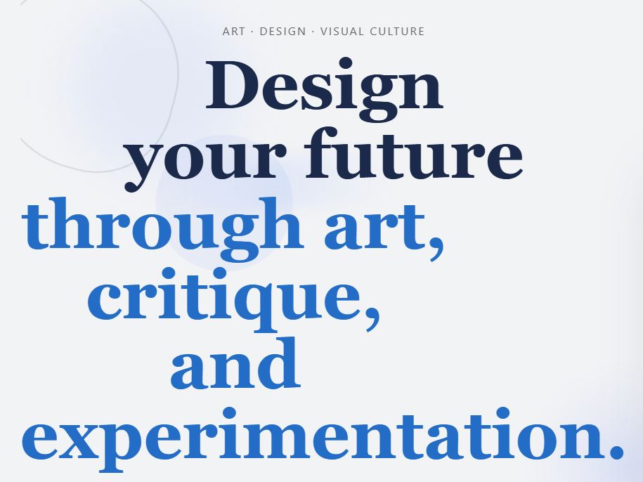

CS student at UNCC concentrating in Cybersecurity with a Math minor — focused on backend engineering, automation, and secure software design.
UX design, backend systems, and automation — built across coursework and professional work.
A semester-long end-to-end UX redesign of art.yale.edu — one of the most notoriously chaotic university websites. Led design through heuristic evaluation, paper sketches, Figma wireframes, a hi-fi prototype, and a fully responsive live site with dark mode, real-time search, and inline form validation — achieving 100% task success in final user testing.

Hi — I'm Kirill, a 22-year-old Computer Science student at UNC Charlotte, concentrating in Cybersecurity with a minor in Mathematics. I graduate in May 2026 with a 3.96 GPA and a place on the Chancellor's List.
I like building things that solve real problems — whether that's a backend API that handles hundreds of edge cases cleanly, a script that eliminates hours of manual work, or a website that actually ranks. I work across the stack but feel most at home in backend systems and automation.
Outside of code, I speak three languages (English, Russian, and Spanish), which helps me think about problems — and people — from more than one angle.
Reach out for internships, full-time roles, or just to connect.